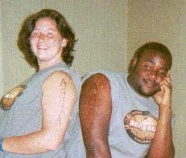

Research Seminars. The most important portion of the program is the research seminars, where professional mathematicians and statisticians contribute problems. At least one of the seminar leaders will be an African American; the other two will be Miami faculty from either the Department of Mathematics and Statistics or the Department of Systems Analysis. Before arriving in Oxford, the students are mailed a card listing each seminar area and prerequisites. They are asked to rank the topics and return the card. They are then assigned an area based on their choice. We hope to give each person his or her first choice, but this is not always possible. During the first four weeks of the program, each seminar director presents a series of lectures to the seminar participants in their area of expertise and assign research problems. These problems are challenging and at the same time easy enough for a very good undergraduate student to get partial results. Each student chooses a problem to work on and consults the appropriate professional. The seminar leaders are asked to meet with their students every day except Friday during the first four weeks and at least twice a week during the last three weeks. We strongly encourage students to work in groups. At the end of the program, the students give an oral presentation on their results and write a paper. The paper will be included in an online journal published by the Institute.
Selected Abstracts from Student
Papers
The students who attended SUMSRI in 2001 participated in three research
seminars looking at topics in statistics, graph theory and algebra.
| Jennifer Everson, Melissa Hildt, Jason Popovic and Sarah Zimmermann determined the desirability of living in any state by using a set of several different variables. The multivariate statistical methods of factor analysis and discriminant analysis lend themselves to this issue. They used factor analysis to reduce a large number of variables to a smaller set of common factors which describe state desirability. They then used discriminant analysis to classify states according to their desirability level based on a set of measured variables. |
| Jillian Martens, Lisa McGee, Christian Roldan Santos and Lisa Sparrgrove investigated the properties of a mod 3 variation of the game "Lights Out" played on an arbitrary graph or digraph, following work done by Craft, Miller and Pritikin. They prove that there are 2n-1 unwinnable configuartion for trees with n vertices, and show a procedure to derive and recognize these configurations. For each graph, they exhibit a nontrivial initial configuration X, which is unwinnable. They characterize which initial configurations are winnable on complete graphs, complete bipartite graphs and acyclic digraphs, certain tournaments, and some other graphs. |
| Khalilah Beal looked at variations of the original Lights Out game for patterns of winnability. Varieties of move shapes and grid sizes are considered, and general formulas for winnability are obtained. When H is an m x n grid with a move shape p, there is created a puzzle space (H,p). (H,p) is a vector space of patterns, called even-dominating sets, for the graph. Both linear algebra (mod 2) and ad hoc methods are used in generating all even-dominating sets. | |
| Ledah Casburn and Tuyet-Linh Phan considered the Josephus Problem from a new perspective. J(n,k) represents the position of the survivor when n people are eliminated with a skip factor of k. They demonstrate that there exists an explicit formula for J(n,k) when n is fixed. They show that the set of all cycles generated by the orders of elimination (for a fixed n) is a group if and only if 1<n<5. |
| Sarah Breede and Christy Finch considered a variation of the classical Josephus Dilemma. In a circle of n men when they eliminate every third person, the order of elimination defines an (n-3)-Josephus permutation. They discover and prove fifteen remarkable patterns in the fixed points of these permutations. |
|  | Sarah Burke and Robert Davis also considered another aspect of the Josephus Problem. Instead of killing all but one person, they considered killing exactly half of the group, which is distinct from the other half. For example, suppose there are n bad guys and n good guys and all the bad guys are killed. Sarah and Robert wrote a program that will find a skip factor that will achieve this goal for any arbitrary ordering of bad guys and good guys. |